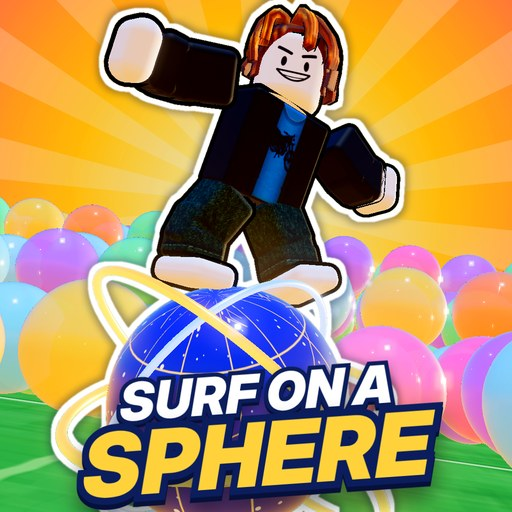

A marble river on every device
Each player's device spawns, rolls and recycles its own river of about 140 physics marbles ahead of them, so riding at 2,000 studs a second stays responsive. Nothing pops in near the camera.

Roblox game · Solo developer · 2026
Ride giant marbles down a river of rolling spheres. Hop between them, dash, grapple and teleport, stay off the burning floor, and race four rival riders to the goal.
Each player's device spawns, rolls and recycles its own river of about 140 physics marbles ahead of them, so riding at 2,000 studs a second stays responsive. Nothing pops in near the camera.
I built Course Layouts to design the courses: it draws every course from the game's own geometry code, and I sketch changes on the map. Each mark becomes exact spots that the AI agents build from, which made design rounds much faster.
Each course is described as sections in a course pack and built at runtime. Every course passes its own test harness and route checks in CI before it ships.
Four computer riders with their own personalities, mistakes and racing lines ride every course, paced to the fastest player, so a one-player server still feels like a race.
70 headless test harnesses run on every pull request, and every merge is published to a private test server in about three minutes through Roblox Open Cloud.
All 18 backdrops, from a neon arcade to a giant backyard garden, are generated from parts in code. Night worlds light the track with neon, because Roblox lights only reach 60 studs.
Free on Roblox for PC, phone, tablet and console.
Built by Anthony Chavez · Luau, Rojo, GitHub Actions and Roblox Open Cloud